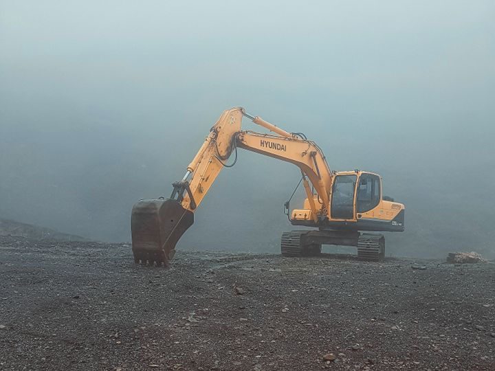

från 180 000 kr
Anläggning och markarbete
Först markarbete, dränering och växtbäddar. Sedan färdiga ytor, gångar och planteringar.
- Villaträdgård 400–700 m²: 180 000–450 000 kr
- Fast pris skriftligt före start
- 5 års garanti på stenläggning och markarbete
Omfattning: villaträdgård 400–700 m²